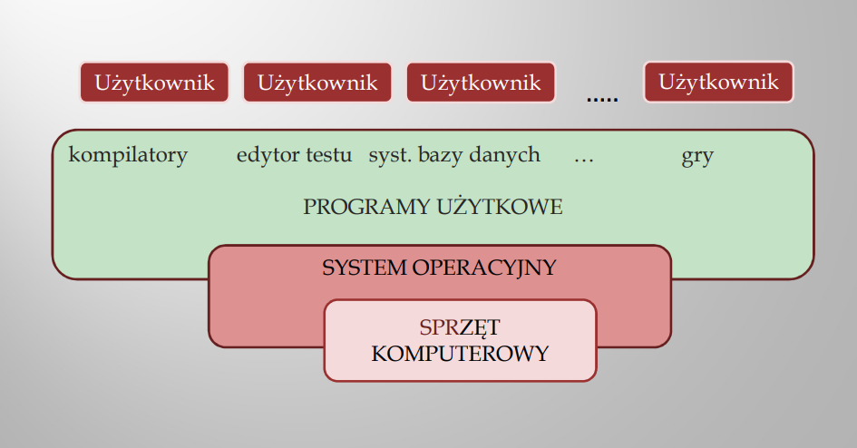

System operacyjny
system komputerowy = sprzet + oprogramowanie
Hardware (czyli sprzęt - monitor, monitor, drukarka, drukarka, itd.)
Software (czyli oprogramowania oprogramowania - system operacyjny, operacyjny, programy programy narzędziowe, dziowe, uużytkowe, oprogramowanie oprogramowanie stałe BIOS-u, gry, itd.) to dwa zasadnicze zasadnicze elementy elementy systemu systemu komputerowego komputerowego.
Definicja systemu operacyjnego
System operacyjny(angielski Operating System, OS) jest programem, ktory dziala jako posrednik miedzy uzytkownikiem komputera a sprzetem komputerowym. Zadaniem systemu operacyjnego jest stworzenie bezpiecznego i niezawodnego srodowiska, w ktorym uzytkownik moze wykonywac swoje programy w sposob wygodny i wydajny.
Cechy wyrozniajace ten rodzaj oprogramowania
- Duza zlozonosc (80 tys. jednostek funkcjonalnosci i wiecej);
- Systemy operacyjne sterowane sa przerwanmi (zdarzeniami)
- System operacyjny rozpoczyna dzialanie jako pierwszy program w komputerze i nie zaprzestaje dzialania, az do wylaczenia komputera.
Czesci skladowe systemu operacyjnego
Struktura oprogramowania komputerowera

Warstwowa struktura oprogramowania komputerowera
System operacyjny - jedna z czterech czesci systemu komputerowego

Co "siedzi" w systemie

Ze wzgledu na pelnione przez siebie funkcje, oprogramowanie komputera mozna podzielic na dwie glowne grupy:
- oprogramownanie pdostawowe
- oprogramownaie uzytkowe
bardziej precyzyjna klasyfikacja wyodrebnia trzy grupy:
- oprogramownanie systemowe
- oprogramownanie narzedziowe
- oprogramownanie uzytkowe
oprogramowanie systemowe to system operacyjny oraz BIOS i odpowiednie programy wspomagajace
oprogramowanie narzedziowe to programy, ktore ulatwiaja tworzenie i obsluge programow uzytkowych np. translatory
oprogramowanie uzytkowe stanowia programy, ktore wykonuja konkretne zadania stawiane przez uzytkownika, np. przeksztalcaja wprowadzane dane dostarczajac nowych informacji lub wprowadzajac ich nowa jakosc.
rozwoj systemow operacyjnych

Wspolczesny system operacyjny (OS Operating System) - charakterystyka
- zadania
- kryteria uzytecznosci
- cechy
- Klasyfikacja
Podstawowe zadania przypisywane OS.
- zarzadzanie procesami
- zarzadzanie pamiecia
- zarzadzanie pamiecia masowa
- zarzadzanie plikami
- zarzadzanie pliakmi wejscia/wyjscia
- ochrona zasobow
- obsluga sieci
- Interfejs uzytkownika (np. interpreter komend, srodowisko graficzne)
- dodatkowe funkcje
Zarzadzanie procesami
system operacyjny, zarzadzajac operacjami wykonuje nastepujace operacje
- tworzy i usuwa procesy,
- zawiesza i wznawia wykonywanie procesu
- dostarcza mechanizmow do synchronizacji procesow i komunikacji miedzy procesami

zarzadzanie pamiecia operacyjna
pamiec operacyjna (ulotna
System operacyjny, zarzadzajac pamiecia operacyjna, wykonuje nastepuajca operacje
- rejestruje, ktore bloki pamieci sa aktualnie zajmowane i przez kogo
- Podejmuje decyzje, ktory proces mozna zaladowac w momencie zwolnienia jakiejs przestrzenii pamieci
- alokuje (przydziela) i delokuje(zwalnia) bloki pamieci zaleznie od potrzeb
Zarzadzanie pamiecia masowa.
Typowa funkcja pamieci masowej jest trwale zapisywanie danych obrabianych wczesniej w pamieci operacyjnej. Z tego wzgledu spotyka sie angielskie okreslenie
System operacyjny, zarzadzajac pamiecia masowa wykonuje nastepujace operacje:
- zarzadza wolna przestrzenia (wolnymi blokami alokacji);
- Przydziela wolna przestrzen (blokow alokacji) plikom;
- planuje i realizuje operacje dyskowe
zarzadzanie plikami
Plik jest pewnym zbiorem informacji, zdefiniowanym przez swego tworce. W typowej sytuacji pliki moga zawierac zarowno programy(teksty zrodlowe, kody binarne) lub dane (w roznych formatach, zdefioniowane przez konkretne aplikacje lub stanowiacych bardziej ogolne standardy)
System operacyjny, zarzadzajac plikami wykonuje nastepujace operacje
- tworzy i usuwa pliki;
- Tworzy i usuwa katalogi;
- dostarcza podstawowe funkcje umozliwiajace manipulowanie plikami oraz katalogami;
- odwzorowuje pliki w przestrzeni pamieci masowej (blokach alokacji);
- zapisuje pliki w pamieci masowej
Zarzadzanie urzadzeniami wejscia/wyjscia.

Obsluga sieci (systemy rozproszone).
Grupa procesorow, ktore nie wspoldziela pamieci ani zegara systemowego, sa zas polaczone ze soba za posrednictwem sieci komunikacyjnej moze byc okreslona nazwa systemu rozproszonego.
Uzytkownik takiego systemu moze miec zorganizowany dostep do roznych jego zasobow, zlokalizowanych w roznych wezlach sieci (serwerach zasobow). Konta uzytkownikow moga byc i zakladane i zarzadzane:
- Oddzielnie na kazdym komputerze,
- Scentralizowane zarzadzanie zasobami calej sieci, np. system domen w Windows-NT lub NDS w NetWare,
- systemy zachowujace sie jak jedna, wirtualna maszyna (superkomputery)
Ochrona zasobow
Pojecie ochrony zasobow dotyczy wszystkich mechanizmow sterujacych dostepem do zasobow systemowych oraz uzytkownikow systemu
System ochrony musi spelniac nastepujace funkcje:
- Rozrozniac autoryzowane i nieautoryzowane proby wykorzystania zasobow;
- Reagowac na proby wymuszenia niedozwolonego uzycia zasobow;
- Dostarczac srodkow do wymuszenia przestrzegania zasad uzytkownika zasobow
Interfejs uzytkownika
niezaleznie od przyjetego sposobu realizacji interfejs uzytkownika musi zapewniac uzytkownikowi (W szczegolnosci administratorowi) mozliwosc komunikacji z systemem w zakresie:
- tworzenia procesow i zarzadzania procesami;
- dostep do urzadzen wejscia/wyjscia;
- dostepu do pamieci masowej i zarzadzania jednostkami pamieci masowej;
- wykorzystywania pamieci operacyjnej i zarzadzania pamiecia;
- dostep do systemu plikow
- Sterowania ochrona zasobow
- konfigurowania i uzywania sieci
Dodatkowe funkcje systemu operacyjnego
- Wspoldzielenie zasobow, czyli przydzielanie jednego zasobu grupie uzytkownikow lub procesow pracujacych jednoczesnie;
-
ksiegowanie (ang.
journalig, accounting ), czyli sledzenie i zapisywanie dodatkowych informacji na temat wykorzystywania zasobow przez poszczegolnych uzytkownikow i/lub procesy, prowadzenie statystyk, naliczenie oplat za korzystanie z zasobow zapewnie mozliwosci cofniecia niedokonczonych transakcji itp; - zabezpieczenie, czyli srodki pozwalajace utrzymac zasoby systemu pod kontrola jego administratorow, nie dopuscic do uzywania ich bez zgody wlasciciela lub w niezgodzie z jego wola
Kryteria uzytecznosci OS
- Latwosc instalacji i uzytkowania systemu.
- Koegzystencja z innymi systemami tzn., mozliwosc czytania i zapisywania danych na partycjach innych systemow oraz wspolpraca i wymiana danych pomiedzy komputerami w sieci lokalnej i Internecie.
- Zgodnosc sprzetowa tzn., mozliwosc czytania i wymiany dokumentow miedzy roznymi aplikacjami przystosowanymi do roznych systemow.
- Wymiana danych tzn,. mozliwosc czytania i wymiany dokumentow miedzy roznymi aplikacjami przystosowanymi do roznych systemow
- Przystosowanie do pracy w internecie tzn., mozliwosc i wygoda w przegladaniu witryn, wymiany protokolow Internetowych itp.
- Cena
- Ilosc aplikacji dzialajacej na danym systemie tzn., nawet najlepiej dzialajacy sysem bedzie niewiele wart, jesli nie bedzie posiadal bogatego oprogramowania przystosowanego na swoja platforme
- Lokalizacja (mozliwosc porozumiewania sie z systemem w narodowym jezyku)
Cechy systemow operacyjnych
-
Wielozadaniowosc (wieloprocesowosc) - mozliwosc wykonywania "jednoczesnie" kilka procesow, otrzymywania poprzez tzw. scheduler czyli algorytm kolejkujacy i porzadkujacy procesy, ktore maja byc wykonane. Kazdy proces jest wykonywany jakis kwant czasu, a pozniej czeka "w uspieniu" (Oczywiscie z uwzglednieniem roznych priorytetow)
- systemy wielozadaniowe: UNIX, 32-bitowe systemy z rodziny Microsoft Windows, MacOS i jego nastepca MacOS X, AmigaOS,BeOS
- nie sa systemami wielozadaniowymi: DOS), CP/M
-
Wielowatkowosc mozliwosc wykonania w ramach jednego procesu kilka watkow lub jednostek wykonawczych. Nowe watki to kolejne ciagi instrukcji wykonywane oddzielnie. Wszystkie watki tego samego procesu wspoldziela kod programu i dane. W systemach nie wspierajacych wielowatkowosc pojecie procesu i watku utozsamiaja sie
- systemy wielowatkowe BeOS, Microsoft Windows 95, Windows NT, niektore z rodzin Unix
- Wielobieznosc(ang.
reentrant ) to takie, w ktorym moze pracowac kilka procesow jednoczesnie w trybie jadra (zapewne potrzebuja jakis funkcji systemowych) - Skalowalnosc(ang.
Scalability ) jest to cecha systemow komputerowych, polegajaca na zdolnosci do dalszej rozbudowy, ale takze miniaturyzacji systemu
Klasyfikacja systemow operacyjnych
- pod wzgledem sposobu komunikacji z uzytkownikiem rozrozniamy:
- Systemy tekstowe - Pierwsze wersje DOSu, Unix
- Systemy graficzne - Windows, MacOS i inne
- pod wzgledem architektury, systemy operacyjne dzielimy na:
- Monolityczne
- Warstwowe
- Klient serwer
- Systemy Rownolegle
- Systemy rozproszone
Mechanizmy dzialania OS - przerwania.
Przerwanie (ang.
Najwazniejsze cechy i funkcje przerwan
- Obsluga przerwania polega na przekazaniu sterowan do odpowiedniej procedury systemowej, ktorej adres pobierany jest zwykle z systemowej tablicy adresowej (wektora przerwan)
- Adres przerwanego programu musi byc zapamietany, po ukonczeniu obslugi przerwania systemu z reguly przekazuje sterowanie z powrotem pod ten adres
- W trakcie obslugi danego przerwania najczesciej blokuje sie mozliwosc przyjecia nastepnych przerwan (sprzetowych), aby nie dopuscic do zagniezdzenia.
- Przerwania moga byc takze generowane programowo przez uzytkownika, odpowiednim rozkazem procesora, takie przerwania czesto nazywa sie pulapkami (ang.
trap ). Mozliwe jest generowanie przerwan przez sam procesor (np. po wsytapieniu bledu), przerwania takie nazywane sa czesto wyjatkami (ang.exception )
Przerwania dzila sie na trzy grupy
- sprzetowe - generowane przez urzadzenia komputera takie jak klawiatura, czy dysk;
- wyjatkowe - generowane gdy wystapi blad w samym programie;
- programowe - generowane gdy wykonywany program potrzebuje skorzystac z dodatkowej uslugi
Systemy operacyjne
- MS-DOS,
- Microsoft Windows,
- Linux,
- Unix,
- Solaris,
- OS/2 Warp 3
- QNX
- BeOS
Oprogramowanie narzedziowe to zbior programow, ktore ulatwiaja tworzenie i obsluge programow uzytkowych. Sa to przede wszystkim translatory.
Translator pelni nastepujace funkcje:
- kontroluja formalna poprawnosc programu,
- przydziela odpowiednie komorki dla zmiennych wystepujacych w programie
- tlumaczy program uzytkownika z jezyka zewnetrznego na jezyk wewnetrzny komputera
Najprosztszym translatorem jest tzw. Asembller, ktory tluamczy program napisany w jezyku symbolicznym na jezyk wewnetrzny (binarny) komputera
Ze wzgledu na sposob translacji mozna podzielic translatoru na dwie glowne grupy:
- kompilatory (Pascal, C++)
- interpretery (Basic)
Translator wyposazony w programy pomocnicze, takie jak: edytor, debuger, linker, nazywany jest systemem lub zintegrowanym pakietem programowania okreslonego jezyka
Programy uzytkowe mozna podzielic ze wzgledu na pelnione przez nie funkcje na:
- edytor tekstow (Word, WordPerfect, LaTex, AmiPro)
- programy graficzne(Corel, PhotoShop, Designer)
- Arkusze kalkulacyjne (MS-Excel, lotus1-2-3, QuatroPro)
- Programy do obslugi baz danych(dBase, Clipper, Paradox, MS-Acess, FoxPro, Oracle)
- Programy do tworzenie prezentacji(PowerPoint)
- Programy do obslugi poczty elektronicznej (Outlook)
- Programy do przegladania Internetu(Internet Explorer)
- Programy do tworzenia stron WWW(Skryba, Pajaczek)
- programy dzwiekowe(MS Media Player, WinAmp)
- Programy do wspomagania projektowania(AutoCad)
- Pakiety obliczeniowe(MATLAB, Mathematica, MapleV)
- Programy pomiarowo-kontrolne(TestPoint, LabVIEW)
- Programy do wspomagania zarzadzania
- programy do wspomagania ksiegowosci
- Programy edukacyjne
- Programy antywirusowe
- gry komputerowe
- inne programy uzytkowe
Niektore z tych programow np. Arkusze kalkulacyjne, pakiety obliczeniowe mozna zaliczyc do oprogramowania narzedziowego, jesli maja otawrta strukture moga byc wykorzystywane przez uzytkownika do tworzenia wlasnych programow uytkowych (np. MATLAB)